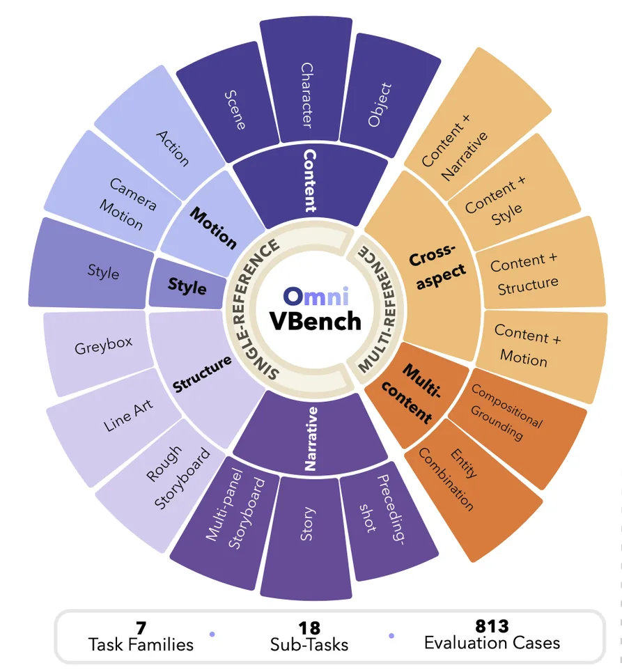

Comprehensive R2V Task Coverage
813 evaluation cases span 7 task families and 18 fine-grained tasks, covering heterogeneous reference types and multi-reference compositions.
Evaluating how models preserve, disentangle, and compose reference factors according to the instruction.
813 evaluation cases span 7 task families and 18 fine-grained tasks, covering heterogeneous reference types and multi-reference compositions.
12,172 case-specific checklist items assess factor preservation, disentanglement, and target binding. Manually verified checklists are shared across models.
Evaluation of 11 open- and closed-source models reveals task-specific strengths and separates reference fidelity from instruction realization.

Tasks distinguish what to preserve, what to change, and how to combine references.
Extract the designated content, motion, style, structure, or narrative from an image or video reference.
Combine multiple entities or complementary factors while binding each reference to its intended target.
| Benchmark | Content Ref. | Motion Ref. | Style Ref. | Structure Ref. | Narrative Ref. | Multiple Refs. | ||||||||
|---|---|---|---|---|---|---|---|---|---|---|---|---|---|---|
| Object | Character | Scene | Action | Camera Motion | Style | Greybox | Line Art | Rough Storyboard | Multi-Panel Storyboard | Story | Preceding-Shot | Multi-Content | Cross-Aspect | |
| OpenS2V-Eval | ✓ | ✓ | ✓ | |||||||||||
| VACE-Bench | ✓ | ✓ | ✓ | ✓ | ✓ | |||||||||
| UniVBench | ✓ | ✓ | ✓ | ✓ | ||||||||||
| IntelligentVBench | ✓ | ✓ | ✓ | ✓ | ||||||||||
| FashionVideoBench | ✓ | ✓ | ✓ | ✓ | ✓ | |||||||||
| OmniVBench (Ours) | ✓ | ✓ | ✓ | ✓ | ✓ | ✓ | ✓ | ✓ | ✓ | ✓ | ✓ | ✓ | ✓ | ✓ |
No model leads across all seven task families. Seedance 2.5 achieves the highest overall score, closely followed by MiniMax H3.
Models are ordered by Overall score. Each task score averages Reference Fidelity (RF), Instruction Realization (IR), and Video Quality (VQ). Orange marks the highest score in each column.
| Model | Group | Content | Motion | Style | Structure | Narrative | Multi-content | Cross-aspect | Overall |
|---|---|---|---|---|---|---|---|---|---|
| Seedance 2.5 | Closed | 78.88 | 66.10 | 67.13 | 73.35 | 73.97 | 77.77 | 71.53 | 72.68 |
| MiniMax H3 | Open | 78.86 | 65.32 | 66.24 | 72.94 | 73.90 | 77.22 | 72.36 | 72.41 |
| Seedance 2.0 | Closed | 79.00 | 63.05 | 63.73 | 68.36 | 73.76 | 76.63 | 71.83 | 70.91 |
| Happy Horse 1.0 | Closed | 75.90 | 68.58 | 65.62 | 69.46 | 72.34 | 74.62 | 69.71 | 70.89 |
| Gemini Omni | Closed | 75.02 | 62.25 | 69.24 | 70.13 | 75.11 | 73.36 | 70.18 | 70.76 |
| Kling 3.0 Omni | Closed | 75.99 | 64.20 | 55.90 | 71.12 | 68.59 | 75.98 | 68.33 | 68.59 |
| Vidu-Q2-Pro | Closed | 71.87 | 47.65 | 59.87 | 51.81 | 50.68 | 72.07 | 62.21 | 59.45 |
| Bernini | Open | 69.27 | 55.92 | 50.62 | 69.44 | 42.02 | 60.32 | 51.03 | 56.95 |
| LoomVideo | Open | 61.24 | 52.09 | 42.03 | 62.53 | 46.98 | 49.02 | 44.86 | 51.25 |
| UniVideo | Open | 66.01 | 44.52 | 47.40 | 48.84 | 36.97 | 58.00 | 46.09 | 49.69 |
| OmniWeaving | Open | 62.23 | 50.58 | 41.40 | 63.19 | 38.03 | 47.49 | 39.25 | 48.88 |
Two selected cases per sub-task, with model outputs compared using the same references and instruction.